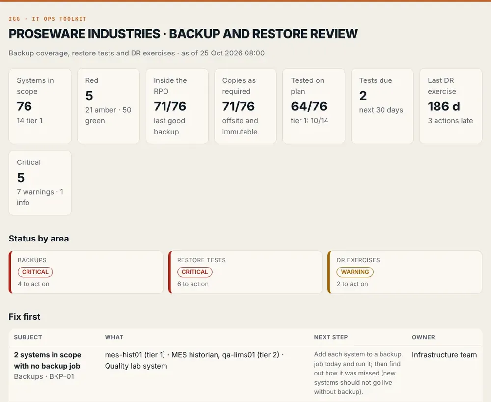

Un panel de backups en verde dice que los trabajos se ejecutaron, no que un sistema se pueda recuperar en el tiempo prometido al negocio. Un trabajo nocturno que ha fallado tres noches seguidas está tres días fuera de un RPO de 24 horas, el objetivo de punto de recuperación, es decir, cuántos datos acepta perder el negocio. Ese es el hueco que saca a la luz la revisión mensual de backups y restauraciones que acompaña a este post, una herramienta de código abierto que se ejecuta con datos de ejemplo de un fabricante inventado con 76 sistemas en tres niveles, un año de pruebas de restauración y sus ejercicios de DR, con los problemas puestos a propósito.
La revisión mide el RPO desde el último backup bueno de cada sistema y cuenta las rachas de fallos. También lista los sistemas sin trabajo de backup y las copias offsite o inmutables que faltan. Una copia que lleva una semana fallando deja el sistema con una sola copia, en un solo sitio.
Restaurar un fichero no demuestra que el ERP vuelva en cuatro horas
En las pruebas de restauración, la herramienta lista los sistemas nunca restaurados, las últimas pruebas fallidas o a medias y las vencidas para su nivel. Compara los tiempos con el RTO, el objetivo de tiempo de recuperación, solo en restauraciones completas: restaurar un fichero demuestra que el backup se puede leer, no que el ERP vuelva en cuatro horas.
Un auditor cuenta las evidencias, no las pruebas
Las pruebas sin evidencia también se señalan. En los ejercicios de DR, la revisión muestra el último, los planificados y no hechos, y las acciones vencidas. El resultado es un informe web con el nivel 1 de un vistazo y un calendario de 12 meses de pruebas pendientes, un orden del día para la reunión y ficheros CSV con las pruebas pendientes, los backups que fallan y un paquete de evidencias para el auditor.
Cómo usarlo con datos reales
Un exportador de solo lectura en PowerShell lee las sesiones de Veeam; los informes de otras herramientas sirven en CSV. Funciona con Python y solo la librería estándar, con 13 tests y un runbook. Lo propuesto es empezar con los sistemas de nivel 1 y un mes de exportaciones reales y reservar las pruebas del mes siguiente en el calendario de cambios.
De dónde sale
La herramienta nace de mi trabajo con Veeam Backup y Commvault, y antes con backups en cinta, diseñando y probando planes de backup y DR, y supervisando pruebas de DR y continuidad de negocio alineadas con ISO 22301. La pregunta que le da forma no es si se ejecutó el trabajo, sino cuándo demostramos por última vez que un sistema se puede recuperar, cuánto tardó y dónde está la evidencia.
¿Quieres llevarlo a tu entorno o adaptarlo a tu caso? Escríbeme y lo vemos.
Tech Career Lab · newsletter
¿Te ha servido? Cada dos semanas envío una idea práctica para perfiles IT: LinkedIn, proyectos, networking y procesos de selección.
Apúntate y llévate las 33 ideas →